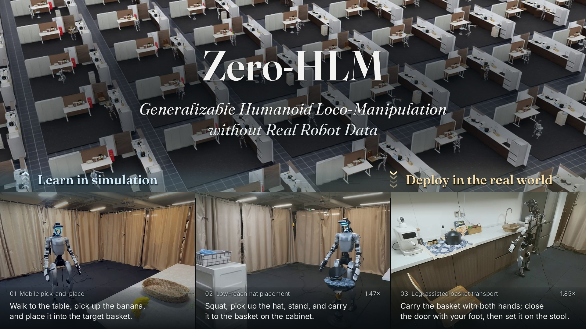

Base Configuration
GR00T N1.7 · Success (%)
Generalizable Humanoid Loco-Manipulation
without Real Robot Data

YouTube could not connect. Please try again or watch on YouTube.
Learning generalizable humanoid loco-manipulation remains bottlenecked by costly real-world demonstrations. Simulation offers a scalable alternative, but extending it to humanoids requires solving two coupled challenges: constructing scene-scale environments that are both visually faithful and physics-ready, and generating successful demonstrations under unified whole-body control.
We present Zero-HLM, a real-to-sim-to-real framework that transforms smartphone captures and simulated source demonstrations into scalable training data for humanoid loco-manipulation. We couple Gaussian visual reconstruction with agentic physical scene construction to build interaction-ready digital twins with aligned visual and physical geometry. Within the environment, our motion–environment co-adaptation strategy synthesizes unified whole-body references and uses rollout feedback to restore interaction geometry when tracking deviations disrupt execution.
We successfully generate 4,800 physically validated demonstrations in simulation using Zero-HLM, averaging a 1.8× speedup over real-world data collection. Policies trained solely on these data transfer zero-shot to a Unitree G1 across three long-horizon tasks. With GR00T N1.7, simulation-only training achieves 66.7% mean full-task success with an absolute 20% gain over real-data training under matched configurations. Across five generalization settings, pooled real-world success increases from 23% to 69% without additional real demonstrations. To support systematic evaluation, we establish a benchmark with nine skill stages and shared protocols for comparing models and studying data scaling.
Video could not load. Please refresh to retry.
GR00T N1.7 · Success (%)
GR00T N1.7 · Success (%)
Method video could not be loaded. Please try another step or replay.
Sample source → Synthesize reference → Validate with SONIC → Correct scene geometry.
Third-person simulation rollouts paired with their rendered egocentric observations.
Dataset clip could not be loaded. Please replay this episode or select another task.
Dataset clip could not be loaded. Please replay this episode or select another task.
Dataset clip could not be loaded. Please replay this episode or select another task.
Real robot comparisons between policies trained with real demonstrations and policies trained with Zero-HLM simulation data.
Loading real-world deployment comparisons...
Loading benchmark results…
Loading key insights…
@misc{yang2026zerohlm,
title = {Zero-HLM: Generalizable Humanoid Loco-Manipulation
without Real Robot Data},
author = {Dianyi Yang and Mengya Liu and Zhumei Wang and Yu Liu
and Xiaochen Zhang and Yixuan Li and Le Ma and Yuhang Yang
and Weiqi Huang and Wei Liang and Baoxiong Jia and Siyuan Huang},
year = {2026},
eprint = {2610.35075},
archivePrefix = {arXiv},
primaryClass = {cs.RO},
url = {https://arxiv.org/abs/2610.35075}
}